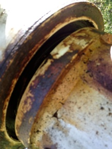

My solar sculptures are an exploration of mankind’s relationship with nature and technology,
and seek to promote an awareness of the normal balance of forces found in nature. Using
solar technology, The Solar Flower Blossom sculptures are colorful and plant-like, in that
they are seductively colorful, changing their shape, deriving sustenance from the energy in
the environment. However they remain as machines. As such they help to make people aware of
the natural world and of the use of solar energy. Furthermore the solar technology that
powers all of these artworks represents a hope for the future. Inevitably as these
sculptures are exhibited even nontechnical people are curious about what makes them work.
This curiosity promotes the awareness that I believe is a key to beginning the restoration
of the normal balance of nature, as well as survival of the human race on earth.
IRIS (closed/open) solar cells, motor, painted aluminum, stainless steel; This
flower blossom sculpture opens and closes throughout the day on about a two
minute cycle, faster when sunny, slower when cloudy, and stopping in the
evening. 10 ft. high, 18 in. wide, 18 in. deep;
As the sun shines, Sisyphus pushes the ball up to the top of the ramp, where
upon it rolls down the other side, and he must come around to the other side and
do it over again. Steel, aluminum, solar panels, titanium figures; 7in. high,
60in. wide, 30in deep.
The wind is one of the earths most universal natural forces. It is both soothing and
powerful, and moves many of my sculptures. From milling grain to flying a kite, mankind has
found many wonderful uses for the wind. My wind powered sculptures are meant to reflect the
energy and excitement of the wind, and as such are lively and colorful.
Animametric Sculptures
miscellaneous_services
an'i•må, n. [L.] life principal; soul.
met'ric, a [L.metricus; Gr. metrikos, pertaining to measure, from metron, measure]
All art is an abstraction of life. That abstraction affects our feelings and thoughts
through the power of recognition. We recognize, consciously or subconsciously, people,
places, things that are part of our experience in life. The attraction of other humans,
memories, tactile experiences that we can not verbalize can be effectively communicated
through works of art. The most powerful art, that work which moves us the most, has the most
direct connection to those subliminal memories.
The mechanics of how we see shapes and colors have been studied and written about by many
artists and scientists. Colors and shapes interact to develop feelings in our subconscious.
The objects in the world that we view as continuous and solid are actually made up of small
particles with mostly space in between. Every one of us, and all of the things that we
perceive in the world, are not really solid at all, but billions of tiny specks in magnetic
suspension. Impressionism (while not philosophically, but in the manner in which
impressionists mechanically constructed paintings, with daubs of paint instead of layers of
washes), and later Pointillism, Cubism and Constructivist sculpture corrected our perception
of the visual world. All continuous surfaces and lines in reality are made up of infinite
segments of various sizes.
My work is a conscious effort to consider the forms and symbols that we encounter in life
that cause us to reflect on our tactile and visual learning experiences. I deliberately
exploit the interaction of shapes, movement and colors to create artworks that are at once
machines and organisms.
Harvard University employed our services to restore this important work by
Alexander Calder. Hand Crafted by Calder himself, this sculpture had been
exposed to the weather for many years, and was in poor condition. In addition to
completely disassembling the sculpture in order to protect the joint surfaces,
new stainless steel nuts and bolts that looked indistinguishable from the
original were manufactured in our studio. After completely cleaning the surfaces
with glass bead blasting, a three part coating system was applied. First a high
zinc content epoxy primer, followed by an epoxy sealer primer, and finally a
high endurance catalyzed urethane top coat was applied. During installation a
protective zinc cathode was employed to further increase protection against
corrosion.
Hot rolled steel, 5ft tall, 5 ft wide, Collection of Harvard University
Elsworth Kelly, Arcs
Harvard University employed our services to restore this important work by
Elsworth Kelly. The sculpture is located in the exterior wall of the parking
garage at Harkness Common. Constructed of heavy aluminum plate, significant
galvanic corrosion was blistering the paint from below the surface, and pitting
the aluminum. The sculpture was attached to the wall with a heavy hollow steel
bracket, which was also corroding. The paint was removed with random orbital
sanders, and then the aluminum was first glass beaded to clean and consolidate
the surface, and then coated with two primers, and a catalyzed urethane topcoat.
The steel, which was causing much of the galvanic corrosion, was glass beaded,
and primed first with a zinc rich epoxy coating, then top coated. The tubular
steel bracket was also filled with a closed cell expanding foam to reduce the
steel surface area exposed to the atmosphere and reducing it’s galvanic
potential.
Heavy Aluminum plate, 20ft tall, 10ft deep, 25ft wide
Collection of Harvard University
Louise Nevelson
Harvard University employed our services to restore this important work by
Louise Nevelson. Hand this sculpture had been exposed to the weather for many
years, and was in poor condition. In addition as the sculpture was fabricated
from industrial scrap and had many flaws in the original metal parts. After
completely cleaning the surfaces with glass bead blasting, a three part coating
system was applied. First a high zinc content epoxy primer, followed by an epoxy
sealer primer, and finally a high endurance catalyzed urethane top coat was
applied. During installation a protective zinc cathode was employed to further
increase protection against corrosion.
Hot rolled steel, 13ft tall, 5ft deep, 9ft wide
Collection of Harvard University
Shingu
Located at Mt Ida College, this sculpture ”Message Across From The Ocean” by
sculptor Susumu Shingu had not been cared for in many years. The pivot bearings
which had been over greased were now caked in a mud like substance that had hardened
onto the paint. Using pressurized hot water we cleaned the surfaces and returned it
to its original white with corten panels

Restoration Projects
restore
On a selective basis our studios will undertake restoration of significant works of art for
institutions, municipalities, and private collectors.
Contact Info
617 846 4423 gc@gregorycurci.com 20 Madison Ave, Winthrop Massachusetts 02152
trending_flat
Scan with any smartphone camera to add as contact: